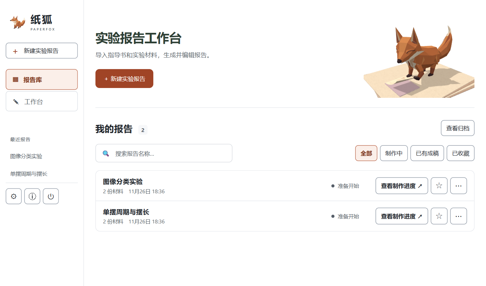

纸狐 PaperFox
GitHub 仓库 ↗
根据材料写实验报告
导入指导书、代码和已有结果。纸狐整理报告，你可以在 Windows 桌面上阅读正文、选句改稿和导出 PDF。
Windows 10 / 11 · 完整解压后双击 PaperFox.exe
三步开始
- 打开纸狐
在「模型设置」选择供应商和支持工具调用的模型。
- 导入材料
选择实验资料目录、指导书和可选的报告模板。
- 检查与导出
查看实验缺项和数据反馈，阅读正文并保存 PDF。
导入指导书、代码和已有结果。纸狐整理报告，你可以在 Windows 桌面上阅读正文、选句改稿和导出 PDF。
Windows 10 / 11 · 完整解压后双击 PaperFox.exe
在「模型设置」选择供应商和支持工具调用的模型。
选择实验资料目录、指导书和可选的报告模板。
查看实验缺项和数据反馈，阅读正文并保存 PDF。